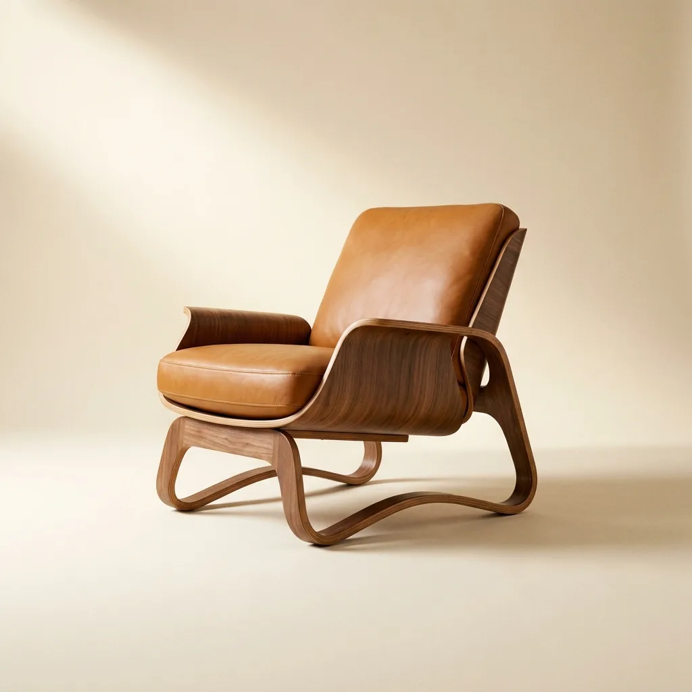
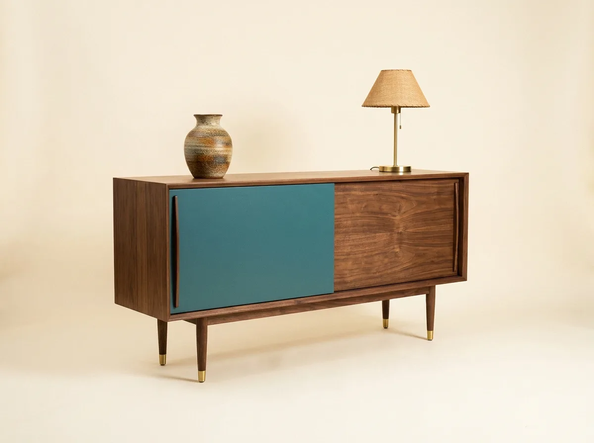
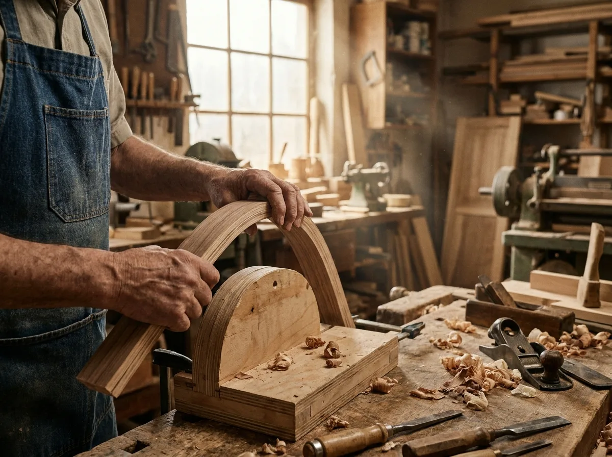

家具設計
以人體尺度與生活情境出發,在木紋與弧度之間反覆推敲,讓每件家具兼具姿態與舒適。
從一塊原木到一個完整的家,曲彎製作所把設計、製作與空間視為同一件作品。
以人體尺度與生活情境出發,在木紋與弧度之間反覆推敲,讓每件家具兼具姿態與舒適。
採用層積彎曲與榫接工法,選用 FSC 認證實木,在台北工坊以手工完成每一道曲面與接合。
從格局、動線到軟裝陳設,將家具放回它該在的位置,讓整個家成為一件完整的作品。
四個系列,各自回應一種生活的姿態。以下為本季最受喜愛的兩件作品。

一體成形的層積彎曲扶手,順著身體的角度緩緩托住。經典中世紀比例,適合閱讀與長坐。

細錐形腳座撐起輕盈量體,推門內藏可調層板。孔雀綠飾板與木紋對話,是客廳的低調主角。

彎曲彎並非把木材硬折,而是順著纖維的走向,以蒸氣與層積的方式,讓它在恰當的弧度上找到平衡。這需要時間,也需要對材料的尊重。
我們相信一件好家具不該只看見設計師的名字,更該看見木頭本來的樣子。每一道曲線背後,都是職人與材料反覆協商的結果。
認識我們的工坊 →了解你的生活習慣、空間條件與對材質的偏好,而非急著畫圖。
提出家具與空間方案,以材樣、比例圖與 3D 模擬呈現整體氛圍。
於台北工坊以手工彎曲與榫接完成,每一階段附上製程紀錄。
到府安裝與軟裝陳設,確認每件家具都落在它該在的位置。
「他們沒有把家具塞滿我的家,而是讓每件家具都有呼吸的空間。十年後再看,依然耐看。」— 林宅 · 大安區自宅改造